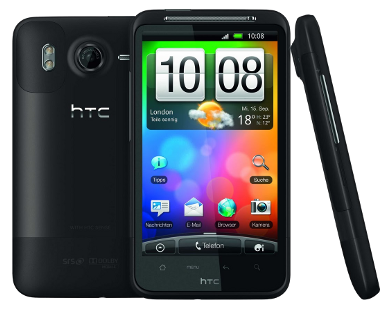
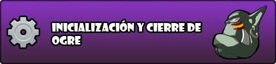

Feb 6, 2011 · 2 minute read · Comments
Games development
El siguiente objetivo en el desarrollo de Sion Tower era la implementación de un sistema de detección de colisiones. Hablamos de un apartado crítico en el desarrollo de un videojuego por la cantidad de cálculos que implica, hay que tener especial cuidado en ese sentido. Llevo un par de semanas trabajando en él de forma intensiva y al menos puedo decir que he conseguido algo que funciona. Les presento la versión 0.1 de STC: Sion Tower Collisions.
Modular y reutilizable
Al ser modular y completamente independiente del resto del juego he decidido liberarlo también por separado. Se puede utilizar sin ningún tipo de problemas en cualquier proyecto. Las únicas dependencias son Ogre y Boost. El código es C++ estándar así que es compatible con cualquier plataforma que soporte las dos bibliotecas anteriormente mencionadas.
Características
- Shape: formas de colisión básicas: esfera, plano y AABB.
- Collision Dispatching: elección del test de colisión de forma adecuado de forma transparente a partir de dos figuras génericas.
- Body: cuerpo colisionable compuesto de varias formas básicas.
- CollisionManager: gestor de colisiones que lleva el registro de de los cuerpos colisionables.
- Filtrado de colisiones: el usuario define explícitamente qué tipos de cuerpos pueden colisionar.
- Particionado del espacio: para aumentar el rendimiento se incorpora un filtrado inicial para evitar tests exhaustivos. Muy básico por el momento.
- Callbacks: es posible indicarle al gestor de colisiones que llame a una función miembro con una signatura determinada ante una colisión entre dos cuerpos de un tipo predefinido.
Descarga
He habilitado una descarga en la forja de Red Iris para que podáis acceder sin problemas. Incluye el código fuente, licencia (GPL 3) y documentación generada con Doxygen. Ruego que me enviéis algún mensaje en caso de encontrar cualquier tipo de problemas: bugs, uso, posibles mejoras, etc.
Documentación adicional
Estoy preparando una serie de varios artículos en los que desgranaré con todo lujo de detalles el proceso de diseño e implementación de este sistema de detección de colisiones. Unir toda la documentación en un sólo artículo lo haría demasiado extenso y prefiero ir poco a poco.
Feb 3, 2011 · 3 minute read · Comments
Computing

Cuando hace más de un año compré mi HTC Magic sólo había tres teléfonos Android en el mercado y todos del mismo fabricante. Alucinaba en colores con su conectividad, prestaciones y pantalla. ¡Tenía un teléfono más potente que mi primer ordenador! Como cualquier otro cacharro no tardó en quedarse anticuado y actualmente se resiente al trabajar casi con cualquier aplicación. Por ello he decidido renovarme y adquirir el HTC Desire HD, una auténtica bestia parda. Cuando pase cierto tiempo trasteando con ella dejaré caer un pequeño análisis personal, mientras tanto comento la forma de eliminar esas odiosas aplicaciones de Vodafone.
El caca-soft
El placer por desprecintar el teléfono nuevo de turno es un claro símbolo consumista pero nos encanta a los amantes de los cacharros. Estaba maravillado por la potencia del HTC Desire HD, era capaz de mantener decenas de aplicaciones abiertas sin inmutarse lo más mínimo. De pronto me dije: “Oh wait…!”, había descubierto las aplicaciones pre-instaladas de Vodafone. Raudo y veloz me dispuse a desinstalarlas pero (¡horror!) están bloqueadas y no pueden ser eliminadas. Mi odio hacia las aplicaciones que mancillan un flamante dispositivo no conoce límites. En la intimidad las llamo caca-soft.
Eliminar aplicaciones pre-instaladas de Vodafone
Una busqueda en Google confirmó mis sospechas, es necesario tener permisos root para poder eliminar aplicaciones bloqueadas. El HTC Desire HD es un terminal relativamente nuevo y aún no existe ningún sistema del tipo “dale a un botón y ya eres root”. Hacía falta hacer un downgrade de la ROM y varias operaciones de seguridad cuestionable. Me negaba.
Con la inestimable ayuda del foro HTC Manía encontré la respuesta. Es posible eliminar las aplicaciones que instala nuestro operador de telefonía sin cambiar la ROM ni tener acceso root. El proceso implica una restauración de fábrica. Las aplicaciones y los contactos están sincronizados, por tanto no los perderás. No obstante, los accesos directos y la configuración volverán a su estado inicial. Para librarte de una vez por todas del caca-soft sigue los siguientes pasos:
- Apaga el teléfono y retira la tarjeta SIM.
- Entra en modo recovery, lo conseguirás pulsando el botón “bajar volumen” mientras enciendes el terminal.
- Selecciona la opción “factory reset”. Para desplazarte por el menú puedes emplear las teclas de volumen, cuando quieras elegir una opción presiona ligeramente el botón de encendido.
- El teléfono se reiniciará.
- Sigue el proceso de configuración inicial y sincronización con Google utilizando una red Wi-Fi.
- Apaga el teléfono e introduce la SIM.
- Cuando arranques de nuevo se te preguntará si deseas sincronizar el teléfono con la tarjeta. Cancela la operación para siempre y no se instalarán las aplicaciones del operador.
Es cierto que las aplicaciones de HTC Sense no pueden ser eliminadas a través de este proceso y requieren disponer de acceso root. Pero al menos ya sufrirás esas aplicaciones que te impone tu operador, carecen de utilidad y a veces consumen recursos en segundo plano.
Eso es todo, ahora vivirás mejor.
Feb 1, 2011 · 2 minute read · Comments
Games development

Muchos seguidores de IberOgre estabais esperando un artículo a modo de introducción para aprender a inicializar el motor. Un artículo de lo más básico era imprescindible y estaba planificado desde el principio. No obstante, debido a diversos motivos no me ha sido posible publicarlo hasta ahora. El retraso ha sido imperdonable pero al menos me queda la satisfacción de haber cumplido el objetivo más prioritario de la lista de objetivos que publiqué hace unos días.
El artículo “Inicialización y cierre de Ogre” sería el primero en el que el lector comienza a trabajar de primera mano con la biblioteca. Es un choque complicado ante la increíble variedad de aproximaciones posibles ante un mismo problema, de hecho cuando yo tuve que dar mis primeros pasos me sentí abrumado. Por ello y siempre teniendo la perspectiva del principiante, he tratado de explicar los conceptos de la forma más clara posible. El lector que avance con paciencia por el artículo y se detenga en los ejemplos no debería tener ningún problema en comprender la secuencia de inicialización de Ogre. Se explican la carga de plugins, los ficheros de configuración y el sistema de logging. Creo que ha quedado un artículo bastante completo, pero siempre podéis mejorarlo haciendo comentarios y sugerencias.
Para terminar quiero decir que estoy horrorizado porque hace unos días recibí un correo de la Universidad de Cádiz recordando la fecha para la fase local del concurso. Tendrá lugar del 21 al 25 de marzo lo que quiere decir que… ¡Quedan menos de dos meses! Esto me dará la motivación suficiente para ampliar IberOgre y conseguir al menos una demo técnica de Sion Tower. Vislumbro muchísimo desarrollo por delante, horas de depuración, trabajo de arte y algún que otro golpe contra la pared.
¡Suerte a todos mis compañeros concursantes de Cádiz!
Jan 27, 2011 · 4 minute read · Comments
Hobbies

Revenge of the Titans es un tower defense desarrollado por la compañía independiente Puppy Games. Me hice con él gracias al Humble Indie Bundle, ese magnífico pack de cinco pequeñas grandes obras al precio que el comprador estimase oportuno. No todos los días lanzan juegos multiplataforma sin DRM y durante las últimas semanas lo he estado disfrutando en mi querida Ubuntu. Sigan leyendo porque el “jueguecito” tiene una propuesta de lo más interesante.

¡Los titanes han vuelto!
Los titanes invadieron La Tierra tiempo atrás y en el matamarcianos Titans Attack (que no he probado) los humanos les hicimos frente. Finalmente han conseguido aterrizar, llegan clamando venganza y dispuestos a reducir nuestro planeta a cenizas. Este es el planteamiento de Revenge of the Titans, un tower defense que destila personalidad.
Revenge of the Titans ofrece tres modos de juego: Campaing, Endless y Survival. En el modo campaña comenzamos defendiendo nuestro planeta y después perseguimos a los titanes por el Sistema Solar. Cada planeta es una campaña compuesta de un puñado de misiones. En el modo interminable debemos atravesar una serie de encuentros con los titanes en creciente dificultad. Finalmente, el modo supervivencia consiste en un único escenario en el que no paran de aparecer titanes. Puede que la campaña no sea extremadamente larga pero la dificultad y los distintos modos de juego aportan longevidad extra. ¡Ah, además hay logros!

Tower defense for the win
En cada escenario debemos acabar con las oleadas de titanes que se ciernen sobre nuestra base central. Es imprescindible recolectar y administrar mineral e invertirlo en construir torretas entre otras estructuras para ponérselo complicado a los invasores. A primera vista puede parecer que desde la vista cenital controlamos el territorio pero, cuando tenemos varios frentes de combate abiertos, las misión se hace cuesta arriba. Conforme avanzamos no es extraño tener que repetir misiones, menos mal que su dinamismo hace que la frustración no aumente demasiado. Cada partida es diferente y no vale de nada memorizar que un enemigo especial entre por un punto determinado puesto que va cambiando. Revenge of the Titans es un reto divertido que nos obligará a buscar la mejor aproximación para cada situación.
Entre misiones podemos aprovechar para invertir recursos en mejoras tecnológicas. El árbol de investigación tiene unas dimensiones aceptables y le da más profundidad al juego. No solo nos encargaremos de gestionar el mineral durante la batalla sino que tomaremos la delicada decisión de investigar en mejoras de armamento o ahorrar para el futuro. Creedme, los recursos son extremadamente limitados.

El encanto de lo Indie
El estilo visual de Revenge of the Titans es harto simple pero nos encandilará al segundo. Todo tiene su encanto: desde los propios titanes pasando por la interfaz hasta nuestros dos consejeros particulares. Una mezcla entre lo tecnológico, el dibujo animado y lo retro. Como podéis ver en las capturas, no destaca en efectos ni innovación excesiva pero a mí me tiene ganado, ¿qué le voy a hacer? Es puro amor.
No obstante, el juego presenta ciertos problemas en su apartado técnico que no puedo dejarme en el tintero. En primer lugar hay que reconocer sus serios problemas de rendimiento. Cuando comienzan a ocurrir muchas cosas en el escenario el juego no responde todo lo bien que debería y la interacción con el usuario se vuelve un pelín tosca. Sería comprensible si manejase un gran número de elementos 3D pero para un juego relativamente sencillo en 2D es grave. El segundo problema es menos crítico y más subjetivo. Hubiese preferido que los indicadores de las unidades fuesen más claros.

En resumen
No quiero que se queden con una mala impresión de Revenge of the Titans por culpa del último párrafo. Es un juego excelente, muy apropiado para pequeños ratos libres. Divertido, gracioso y con un planteamiento que incita a seguir jugando lo cual es decir mucho. El problema es que duele sobremanera pagar cerca de 13€ por un producto sencillo estando disponibles verdaderos triples A en plataformas como Steam. El Humble Indie Bundle fue una maravillosa oportunidad para adquirirlo a mejor precio, quizás dentro de poco hagan rebajas. Bueno, les dejo que ahora le toca el turno a Braid.
Jan 24, 2011 · 2 minute read · Comments
Hobbies
Había algunas películas decentes en la cartelera y gracias a unos cartuchos vacíos de impresora las entradas nos iban a salir gratis por lo que la situación no pintaba nada mal. Camino a la libertad de Peter Wier fue la opción escogida y es que el director de El club de los poetas muertos y de El show de Truman daba bastante confianza. A continuación leerán (o cerrarán la pestaña del navegador) una pequeña reseña firmada por un pésimo crítico de cine.
Camino a la libertad es un drama basado en la novela de Slavomir Rawicz “The long walk” que a su vez toma como fuente de inspiración hechos reales, igualito que las películas de Antena 3 un domingo por la tarde. Está ambientada en la Segunda Guerra Mundial y narra la historia de un grupo de presos fugados de un campo de trabajo soviético en plena Siberia. Mientras el frío cala en los huesos del espectador, los prófugos deben atravesar miles de kilómetros a pie hasta la frontera soportando mil penurias.
Desde las montañas heladas hasta el desierto abrasador se interponen entre los sufridos viajeros y la libertad. Como hemos visto en otras muchas películas, en los momentos verdaderamente difíciles salen a reducir los instintos animales necesarios para sobrevivir. Cualquier hombre en esas circunstancias puede ser tan peligroso como un lobo acorralado. Es cierto que es un tema ya visto gana en interés por el excelente trabajo de fotografía. Tanto la belleza como la dureza de los variados entornos quedan perfectamente plasmadas en la cinta.
Considerable duración (133 minutos) teniendo en cuenta que sólo muestra una buena caminata, todo un atrevimiento. Para mi sorpresa no se hizo aburrida y, aunque tiene ciertos altibajos, la tensión no para de crecer. Olvidaos de acción a raudales o cualquier tipo de excesos, es una película sobria que cumple su cometido. Quizás podría achacarle la sensación de que algunas escenas no están bien enlazadas pareciendo un collage un poco caótico. El reparto no es muy conocido exceptuando a Collin Farrel y a Ed Harris, no me ha llamado la atención el trabajo de ninguno ni en el buen ni en el mal sentido.
En definitiva, una buena película con un planteamiento distinto a lo que estamos acostumbrados a ver en cartelera. Manda narices pagar por ir a ver verdaderos truñacos y una vez que me sale el cine gratis merecía la pena.